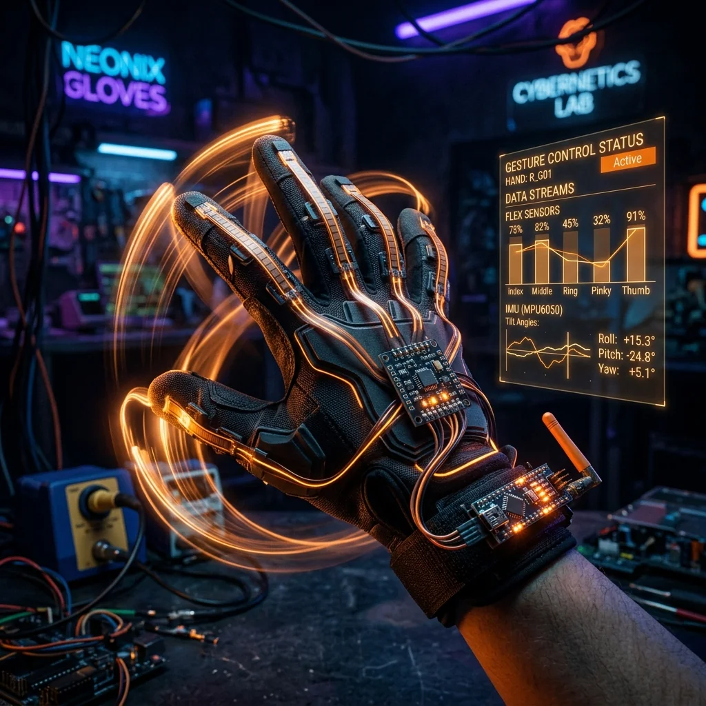

Mini Quadcopter Drone

Project Overview
The Mini Quadcopter Drone is a scratch-built 250mm class quadcopter powered by a custom Arduino-based flight controller. Four 1000KV brushless motors driven by 20A ESCs provide the thrust, while an MPU6050 IMU feeds real-time gyroscope and accelerometer data to a hand-tuned PID controller running at 250Hz. An NRF24L01 radio link connects to a handheld transmitter providing throttle, pitch, roll, and yaw control. The entire system runs on a 3S 1500mAh LiPo battery, providing approximately 8 minutes of flight time.
Key Features & Implementation
- 250Hz PID Flight Controller: The Arduino's hardware timer is configured to interrupt at exactly 4ms intervals for the PID loop. Separate P, I, and D gains for roll, pitch, and yaw are individually tuned to provide stable hover and responsive directional control — a process that took over 30 test flights to optimise.
- Complementary Filter IMU Fusion: Raw gyroscope and accelerometer data from the MPU6050 are fused using a complementary filter (98% gyro / 2% accelerometer) to compute stable roll and pitch angles immune to both short-term gyro drift and accelerometer vibration noise.
- ESC Calibration & Arming: All four ESCs are calibrated simultaneously via a dedicated Arduino routine that sends max and min throttle pulses in sequence. A hardware arming safety switch prevents accidental motor start-up and must be physically toggled before the PID loop activates.
Challenges Solved
High-frequency vibrations from the brushless motors corrupted the MPU6050's gyro readings, causing the drone to oscillate violently mid-flight. The solution was dual-layer vibration isolation: the MPU6050 was mounted on a 3D-printed foam-damped platform, and the PID derivative term had a low-pass filter applied at 80Hz — eliminating the oscillation while preserving responsive attitude control.
Explore Related Projects
Discover more of our robotics and IoT projects.

Obstacle Avoiding Robot
Autonomous Arduino robot using three HC-SR04 ultrasonic sensors for 180° obstacle detection and avoidance.

Gesture Control Glove
Wearable Arduino glove with flex sensors and MPU6050 for wireless gesture-based robot control.